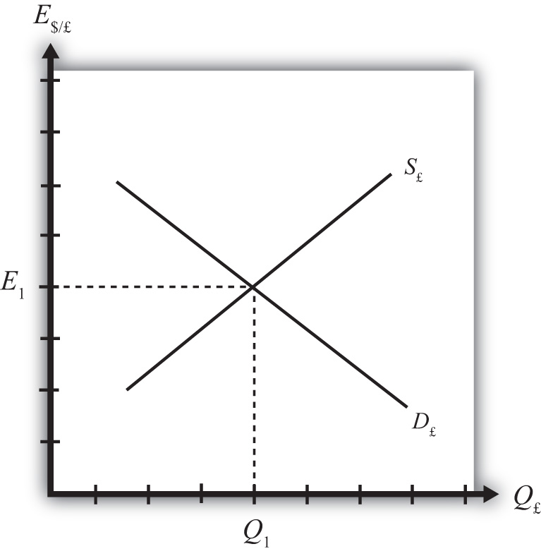

Interest rate parity (IRP)A condition in which the rates of return on comparable assets in two countries are equal. is a theory used to explain the value and movements of exchange rates. It is also known as the asset approach to exchange rate determination. The interest rate parity theoryA theory of exchange rate determination based on investor motivations in which equilibrium is described by the interest rate parity condition. assumes that the actions of international investors—motivated by cross-country differences in rates of return on comparable assets—induce changes in the spot exchange rate. In another vein, IRP suggests that transactions on a country’s financial account affect the value of the exchange rate on the foreign exchange (Forex) market. This contrasts with the purchasing power parity theory, which assumes that the actions of importers and exporters, whose transactions are recorded on the current account, induce changes in the exchange rate.
Interest rate parity refers to a condition of equality between the rates of return on comparable assets between two countries. The term is somewhat of a misnomer on the basis of how it is being described here, as it should really be called rate of return parity. The term developed in an era when the world was in a system of fixed exchange rates. Under those circumstances, and as will be demonstrated in a later chapter, rate of return parity did mean the equalization of interest rates. However, when exchange rates can fluctuate, interest rate parity becomes rate of return parity, but the name was never changed.
In terms of the rates of return formulas developed in Chapter 15 "Foreign Exchange Markets and Rates of Return", interest rate parity holds when the rate of return on dollar deposits is just equal to the expected rate of return on British deposits, that is, when
RoR$ = RoR£.Plugging in the above formula yields
This condition is often simplified in many textbooks by dropping the final term in which the British interest rate is multiplied by the exchange rate change. The logic is that the final term is usually very small especially when interest rates are low. The approximate version of the IRP condition then is
One should be careful, however. The approximate version would not be a good approximation when interest rates in a country are high. For example, back in 1997, short-term interest rates were 60 percent per year in Russia and 75 percent per year in Turkey. With these interest rates, the approximate formula would not give an accurate representation of rates of return.
Investor behavior in asset markets that results in interest parity can also explain why the exchange rate may rise and fall in response to market changes. In other words, interest parity can be used to develop a model of exchange rate determination. This is known as the asset approach, or the interest rate parity model.
The first step is to reinterpret the rate of return calculations described previously in more general (aggregate) terms. Thus instead of using the interest rate on a one-year certificate of deposit (CD), we will interpret the interest rates in the two countries as the average interest rates that currently prevail. Similarly, we will imagine that the expected exchange rate is the average expectation across many different individual investors. The rates of return then are the average expected rates of return on a wide variety of assets between two countries.
Next, we imagine that investors trade currencies in the foreign exchange (Forex) market. Each day, some investors come to a market ready to supply a currency in exchange for another, while others come to demand currency in exchange for another.
Figure 16.1 The Forex for British Pounds
Consider the market for British pounds (£) in New York depicted in Figure 16.1 "The Forex for British Pounds". We measure the supply and demand of pounds along the horizontal axis and the price of pounds (i.e., the exchange rate E$/£) on the vertical axis. Let S£ represent the supply of pounds in exchange for dollars at all different exchange rates that might prevail. The supply is generally by British investors who demand dollars to purchase dollar denominated assets. However, supply of pounds might also come from U.S. investors who decide to convert previously acquired pound currency. Let D£ the demand for pounds in exchange for dollars at all different exchange rates that might prevail. The demand is generally by U.S. investors who supply dollars to purchase pound-denominated assets. Of course, demand may also come from British investors who decide to convert previously purchased dollars. Recall that
which implies that as E$/£ rises, RoR£ falls. This means that British investors would seek to supply more pounds at higher pound values but U.S. investors would demand fewer pounds at higher pound values. This explains why the supply curve slopes upward and the demand curve slopes downward.
The intersection of supply and demand specifies the equilibrium exchange rate (E1) and the quantity of pounds (Q1) traded in the market. When the Forex is at equilibrium, it must be that interest rate parity is satisfied. This is true because the violation of interest rate parity will cause investors to shift funds from one country to another, thereby causing a change in the exchange rate. This process is described in more detail in Chapter 16 "Interest Rate Parity", Section 16.2 "Comparative Statics in the IRP Theory".
Jeopardy Questions. As in the popular television game show, you are given an answer to a question and you must respond with the question. For example, if the answer is “a tax on imports,” then the correct question is “What is a tariff?”